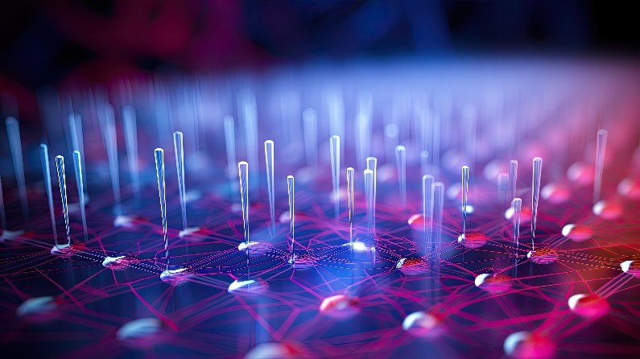

Voici des articles trouvés sur Internet qui traitent des capteurs biologiques implantables pour en savoir plus. Pour chaque article, vous trouverez le titre, la date de publication, le lien vers l'article et un résumé.
Bonne nouvelle pour les diabétiques : feu vert pour un capteur implantable qui dure 6 mois
Date de publication : 18 février 2022
Source : Smart Health
Résumé :
L'article annonce l'approbation d'un nouveau capteur implantable destiné aux diabétiques, offrant une durée de fonctionnement de six mois. Ce capteur innovant permet une surveillance continue et précise de la glycémie, améliorant ainsi la gestion du diabète. Il représente une avancée importante pour les patients, réduisant la nécessité de changements fréquents et simplifiant le suivi de leur état de santé.
Le transistor en plastique amplifie les signaux des capteurs implantables
Date de publication : le 3 mai 2023
Source : Linkidoc
Résumé :
L'article traite des récentes avancées dans le domaine des capteurs implantables grâce à l'utilisation de transistors en plastique. Ces nouveaux transistors offrent une solution prometteuse pour améliorer les performances des capteurs biologiques implantables.
L'article souligne que l'innovation des transistors en plastique représente une avancée significative dans le domaine des capteurs implantables. En offrant une meilleure amplification des signaux tout en étant flexible et économique, cette technologie pourrait transformer les dispositifs médicaux implantables et améliorer les soins de santé personnalisés.

Fournir la science et les scientifiques nécessaires pour accélérer la médecine des biocapteursDate de publication : 22 juin 2023
Source : Projects Research and Innovation, EU
Résumé :
L'article présente un projet de recherche européen visant à accélérer les avancées dans la médecine des biocapteurs. Il se concentre sur le développement scientifique et technologique nécessaire pour améliorer les biocapteurs, qui sont essentiels pour la surveillance et le diagnostic médicaux. Le projet soutient la recherche, la collaboration entre scientifiques, et l'innovation pour faire progresser les capacités des biocapteurs et leur application en médecine personnalisée.
BEurope Implantable Sensors Market
Année de publication : 2024
Source : Business Market Insights
Résumé :
Cet article analyse le marché des capteurs implantables en Europe, en mettant en lumière les tendances actuelles et les prévisions de croissance. Il examine les principaux segments du marché, les innovations technologiques, et les facteurs qui influencent la demande de capteurs implantables, tels que l'augmentation des maladies chroniques et les avancées dans les technologies médicales. Le rapport fournit des insights sur les principaux acteurs du marché, les opportunités d'expansion, et les défis à relever pour les fabricants et les investisseurs.